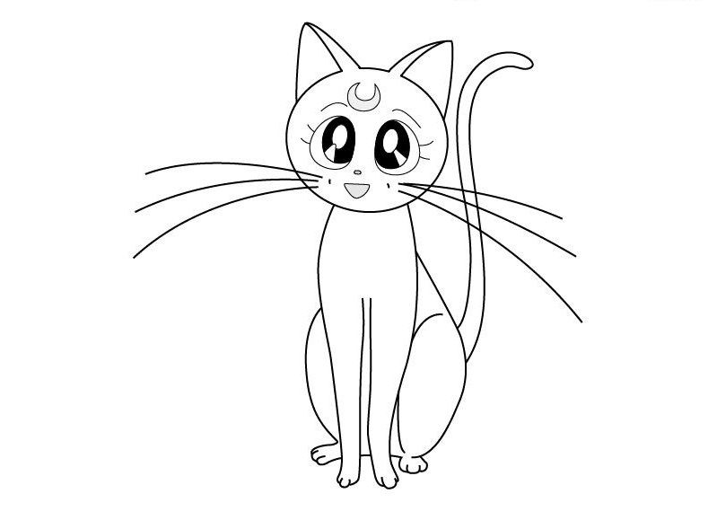

Статья 1
Размер блока:
Занимает всю доступную ширину
Должен присутствовать цвет фона
Во всех "статьях" сделайте отступ снизу от соседей равным .2em, при помощи свойства margin-bottom
Статья 2
Размер блока:
Занимает всю доступную ширину
Должен присутствовать цвет фона
Во всех "статьях" сделайте отступ снизу от соседей равным .2em, при помощи свойства margin-bottom. Картинка вставлена при помощи тега, плавание организовано по правому краю внутри данной статьи для этой картинки.
